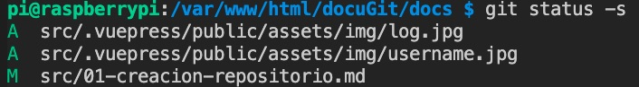
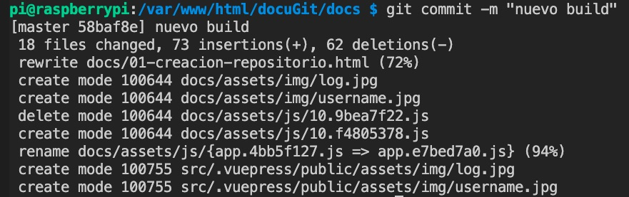

# 01 Creación de repositorios
# Git init
El primer paso para la creación de un repositiorio git es mediante el comando:
git init
Esto creará una carpeta oculta llamada .git en la cual se guardará toda la información del proyecto. Este comando solo se ejecutará una vez en nuestro proyecto, ya que una vez usado ya habrá creado esa carpeta .git y no habrá que volver a usarlo en ese ordenador para ese proyecto.
Este comando creará dos areas en nuestro proyecto, una de estas areas es la llamada Staging area o area de ensayo y el otro area es el repositorio local (repository). Aunque todo esto se hará de manera transparente a nosotros, ya que nosotros seguiremos trabajando en nuestro directorio de trabajo (working directory).
El staging area es el area donde hacemos un seguimiento de los archivos hayamos seleccionado (add). Este area del repositorio local o staging area es el lugar donde se han mandado todos los cambios (commit).
En resumidas cuentas nosotros trabajamos en nuestro working directory y cuando hacemos cambios podemos pasar esos archivos a nuestro staging area y una vez hechas todas las modificaciones pasar todos esos cambios a nuestro repository el cual creará un punto de versión al que podremos acceder en cualquier momento para revisarlo.

# Git add
Mientras trabajamos en nuestra carpeta local y una vez que hemos modificado, borrado, o creado archivos tenemos que decirle a git que pase esos archivos al staging area y eso se consigue con:
git add <nombre_archivo>
Una vez ejecutado este comando, git hace un seguimiento de este archivo (y no de los que no se hayan añadido) ya que se encuentra en el staging area. Todo este proceso lo hace de manera transparente a nosotros, ya que nosotros seguimos viendo nuestra carpeta local, pero internamente ese archivo, al estar en el staging area, estará continuamente siendo revisado en cada cambio que hagamos.
Si por otro lado hemos modificado/creado/borrado muchos archivos, en vez de ir haciendo add de cada uno, podemos pasar todos al staging area con:
git add .
# Git commit
una vez tengamos todos nuestros archivos en nuestra stagging area, para pasarlos a nuestro repositorio local hay que ejecutar el comando:
git commit -m "nombre descriptivo de la subida"
De este modo hemos creado una "instantanea" o respaldo de nuestro trabajo hasta ese momento y nuestro stagin area quedará vacio ya que todo se ha pasado al repositorio local. De este modo acabamos de crear un punto de respaldo, al que podremos acceder más adelante mediante un ID que se le ha asignado. Cada commit no machaca el anterior, simplemente crea nuevos puntos cada uno con su propio ID.
# Git status
Según vamos trabajando y creando archivos llegará un punto en el que no sabremos que archivos tenemos en nuestro staging area y para eso hemos de usar el comando:
git status -s

De este modo veremos que archivos hemos modificado (M), borrado (D) o sin seguimiento (??).
En el momento que añadimos todo al staging area (git add .) veremos como los flags han cambiado y nos avisa de que ya estan añadidos.

En este pantallazo vemos como se han añadido (A), modificados (M) o renombrados (R).
# Git commit
Para pasar nuestra staging area a nuestro repository hemos de usar:
git commit -m "nombre descriptivo de la subida"

# Loguearse
El logueo es simplemente un proceso para ver quien es el que ha hecho cambios. No hay que crear una cuenta previamente, simplemente usar estos dos comandos para poner nuestro nombre y nuestro email. Este proceso hay que hacerlo en cada ordenador que trabajemos.
git config --global user.name "nombrededeusuario"
Decimos cual es nuestro nombre de usuario en esta maquina.
git config --global user.email "emaildedeusuario"
Decimos cual es nuestro nombre de usuario en esta maquina.
# Clonar repositorio
git clone "https://github.com/nombreproyecto.git"
# Revertir cambios
git checkout -- <nombre archivo>
# Comprobar estado actual de la rama sin commit
git status
# Crear rama (branch)
git branch -M <nombrederama>
# cambiar de rama
git checkout <nombrederama>
git fetch
Descarga los cambios realizados en el repositorio remoto.
git merge <nombre_rama>
Impacta en la rama en la que te encuentras parado, los cambios realizados en la rama “nombre_rama”.
git pull
Unifica los comandos fetch y merge en un único comando.
git push origin <nombre_rama>
Sube la rama “nombre_rama” al servidor remoto.
git checkout -b <nombre_rama_nueva>
Crea una rama a partir de la que te encuentres parado con el nombre “nombre_rama_nueva”, y luego salta sobre la rama nueva, por lo que quedas parado en esta última.
git checkout -t origin/<nombre_rama>
Si existe una rama remota de nombre “nombre_rama”, al ejecutar este comando se crea una rama local con el nombre “nombre_rama” para hacer un seguimiento de la rama remota con el mismo nombre.
git branch
Lista todas las ramas locales.
git branch -a
Lista todas las ramas locales y remotas.
git branch -d <nombre_rama>
Elimina la rama local con el nombre “nombre_rama”.
git push origin <nombre_rama>
Commitea los cambios desde el branch local origin al branch “nombre_rama”.
git remote prune origin
Actualiza tu repositorio remoto en caso que algún otro desarrollador haya eliminado alguna rama remota.
git reset --hard HEAD
Elimina los cambios realizados que aún no se hayan hecho commit.
git revert <hash_commit>
Revierte el commit realizado, identificado por el “hash_commit”.